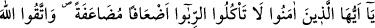
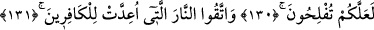
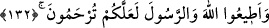
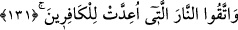

FÂİZ
130. Ey îman edenler! Kat kat arttırılmış olarak fâiz yemeyin. Allah’dan sakının
ki kurtuluşa eresiniz.
131. Kâfirler için hazırlanmış bulunan ateşten sakının!
132. Allah’a ve Rasûlü’ne itaat edin ki rahmete kavuşturulasınız.
“Ey inananlar! Kat kat, fazla fazla, tekrar tekrar fâiz yemeyin.” Yemek ile
kasdedilen, fâiz almaktır. “Fâiz alma” mefhûmunun, “fâiz yemek” şeklinde ifade
edilmesinin sebebi, fâizden maksadın çoğunlukla onu yemek olması; ayrıca çok kötü bir
davranış olmasına rağmen, fâiz muamelesinin, daha ziyâde yenilen şeylerde cârî
olmasıdır.
Cahiliye döneminde, bir kişinin birinden 100 dirhem alacağı olduğu; borçlunun da
ödeyecek gücü olmadığı zaman, alacaklı borçluya: “Parayı (borcu) artır, ben de ödeme
süresini uzatayım” der ve borçlu da borcunu iki yüz dirheme çıkarırdı. Sonra, ikinci
ödeme günü gelip çatınca aynı şey tekrarlanırdı. Nihâyet bir sürü ödeme günü ve bir
sürü borç ortaya çıkardı. Alacaklı, verdiği yüz dirheme karşılık yüzlerce dirhem alırdı.
“Ad’âf”, “da’f”ın cem’i olup kat kat demektir. “Ad’âf”, cemî kıllet (azlık cem’i) olup
âyetin maksadı ise ribânın çokluğunu beyân etmek olunca, bu kelimeden sonra kesrete
(çokluğa) delâlet eden bir kelime getirilerek “ad’âf” kelimesi “mudâafe” ile
vasıflanmıştır. “Mudâafe” kelimesi masdar değil, ism-i mef’ûldür.
Bu âyetteki “kat kat oluş” yasaklamanın sadece fâizin kat kat olduğu durumlara
hasredilmesini gerektirmez. Dolayısıyla fâiz kat kat olmadığında haramlık kalkmış
değildir. Buradaki kayıt Arapları, içinde bulundukları durum yüzünden kınamak maksadı
ile bu âdetlerini gözlerinin önüne serme gayesine matûftur.
Özellikle ribâ ve ribâlı muameleler olmak üzere, size yasaklanan şeyler husûsunda
kurtuluşa ermeyi umarak Allah’dan korkun ki, kurtuluşa eresiniz.
131. Kâfirler için hazırlanmış bulunan ateşten sakının!
Kâfirlerin peşinden gitmekten sakınmak ve kendi aralarındaki alış-veriş